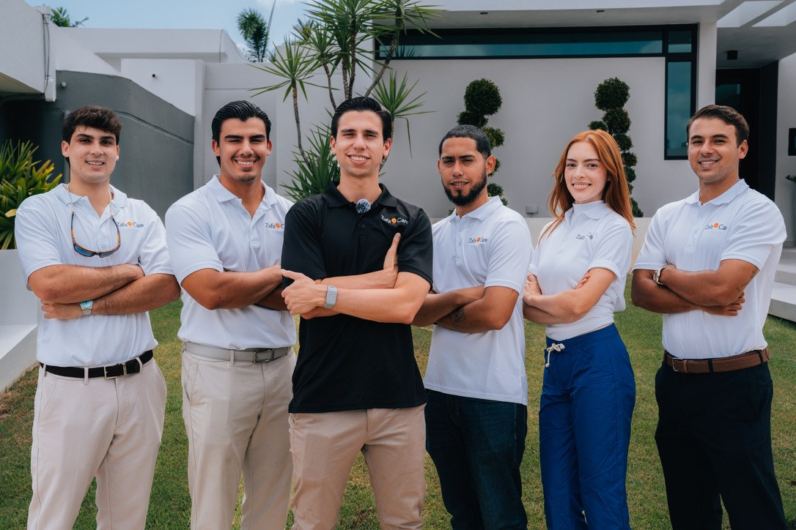
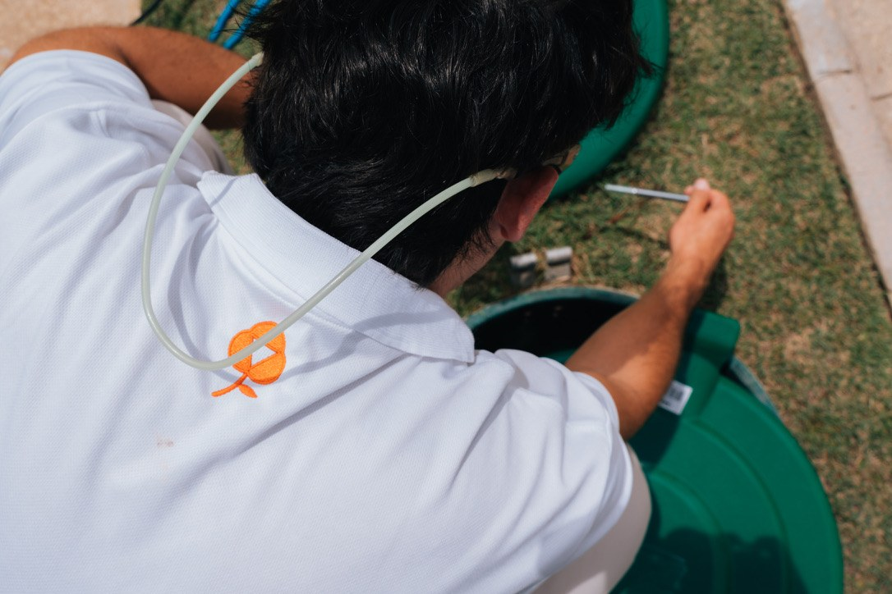
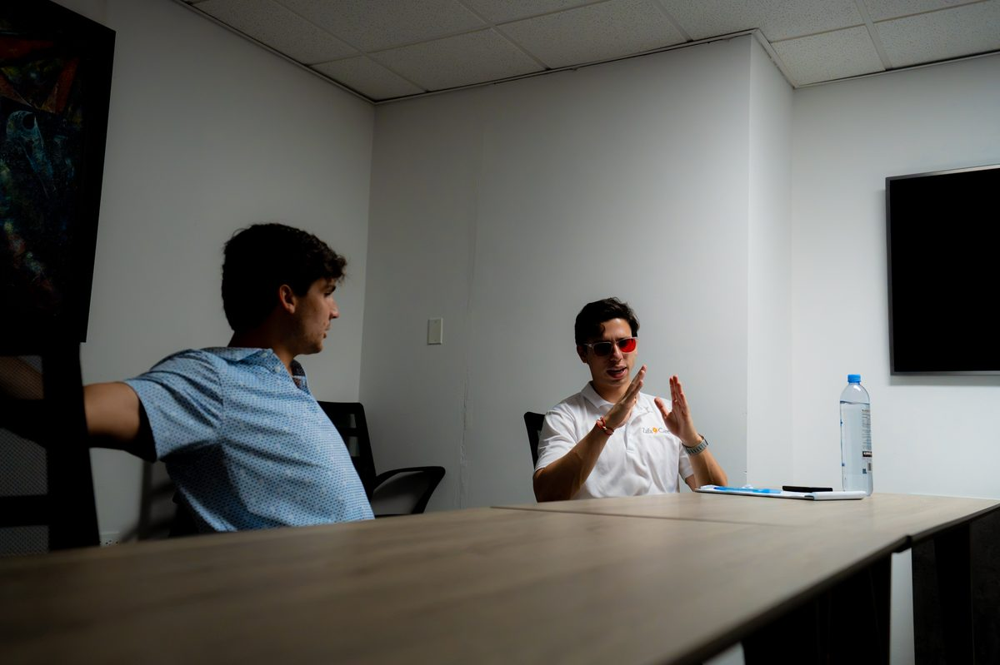
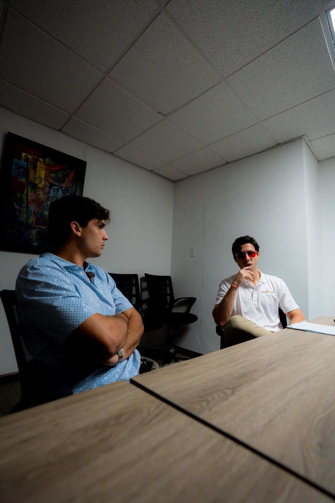

ZafaCare es limpieza y mantenimiento de zafacones residenciales en Puerto Rico. Mi ángulo: cómo entro, me manejo y crezco dentro de una industria que nadie romantiza, que la mayoría ni siquiera piensa que es un negocio real, y qué he aprendido en el camino.
Hace dos años fundé ZafaCare junto a uno de mis mejores amigos, para traer a Puerto Rico una compañía que no existía aquí. El primer año completo no generamos ni un dólar de ganancia: todo fue pérdida. Invertíamos alrededor de $300 al mes que se iban en materiales, y yo estudiaba mientras sostenía la operación.
A principios del año siguiente empecé a automatizar procesos, a invertir en campañas de marketing y a colocar a las personas correctas en cada posición. Fue entonces cuando el negocio dejó de depender de mi disponibilidad diaria, y ahí llegaron los primeros resultados reales.
Nada de fotos de stock. Esto es lo que pasa de verdad cuando estamos operando.




El servicio resuelve una tarea; la hospitalidad resuelve a una persona. Ahí está la diferencia que casi nadie ve. Lo que le vendo al cliente no es limpieza ni mantenimiento: es el tiempo que deja de gastar haciéndolo él mismo.
No vendemos tareas, ofrecemos una experiencia completa. El servicio empieza en cómo recibimos al cliente en la primera llamada, y no termina cuando nos vamos: el customer success da seguimiento y confirma que todo salió como se esperaba.
Nadie cambia una industria señalándola desde afuera; se cambia siendo el primer ejemplo de que es posible hacerlo distinto. Si quiero cambiar cómo se hace el servicio en Puerto Rico, tengo que ser quien abre el camino.
Detrás de cada número hay una persona que decidió mostrarse hoy también. Ese es el verdadero motor de cualquier negocio. No corre porque yo esté encima de cada tarea, corre porque hay un equipo de 11 personas que se apropia de su rol todos los días. [Dime si quieres que nombre a alguien específico del equipo aquí y lo ajusto.]
Antes de ZafaCare hice software sales y monté tres negocios, incluyendo marketing y desarrollo de websites por $500. Ahí aprendí que la gente siempre busca dos cosas: tiempo y calidad de servicio.
Junto a uno de mis mejores amigos, para traer a Puerto Rico una compañía que no existía. El primer año fue 100% pérdida.
Con inversionista, equipo de 11 personas, nueva estructura de membresías y expansión hacia comercial, industrial y retail. La meta: ser el número uno en Puerto Rico, y después a nivel mundial.
Cada semana comparto lo que está funcionando, lo que no, y por qué.
Sígueme